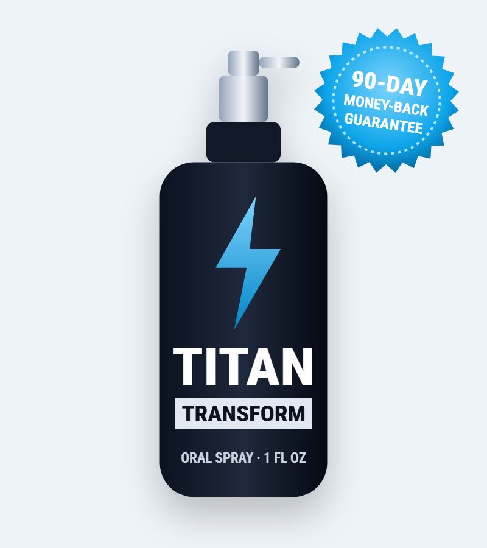
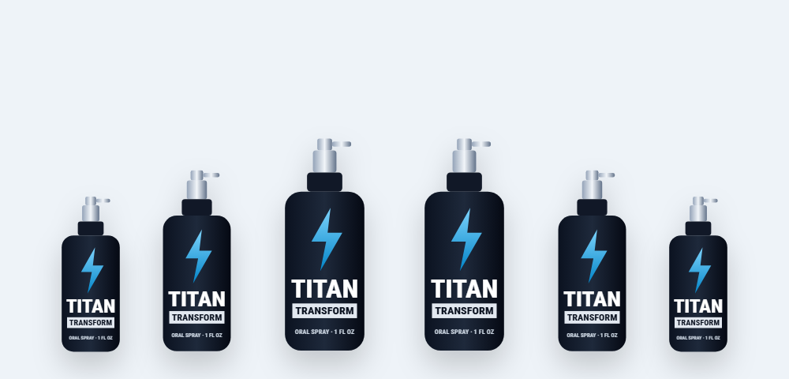
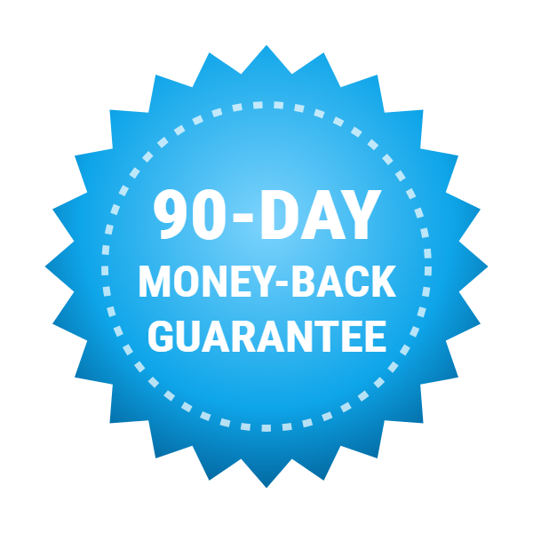

2 Bottles
60-Day Supply
$79/bottle
No bonuses
- Total: $158
- + shipping
- 90-Day Guarantee
What's really in the Titan Transform oral spray, which ad claims hold up, and what to know before you buy

Titan Transform is an under-the-tongue spray marketed as a male enhancement formula. Its ad promises dramatic results, including a bigger penis from a "7-second ritual." In this Titan Transform review we read the actual label, look at the research on each ingredient, point out the safety issues — especially the L-dopa it contains — and cover the price and how to order if you still want to try it.
Titan Transform is a liquid supplement in a 1 fl oz spray bottle. You spray it under your tongue — two sprays in the morning and four before bed — hold it for 20 seconds and swallow. The label lists TitanTransform.com of Aurora, Colorado as the distributor and says it's made in the USA. Orders go through the BuyGoods checkout.
The label splits the formula into two blends. A "Growth Factor Complex" contains alpha-GPC, GABA, L-dopa bean (mucuna) and moomiyo (a mineral resin also known as shilajit). An "HGH Stimulator" contains eight amino acids, including L-arginine and ornithine alpha-ketoglutarate. The label states the product contains no hormones.
The sales video headline reads "Doctors Shocked: Do This 7-Second Ritual & Boost Penis Size by 65%." That claim isn't supported by any research, and no supplement can enlarge the penis. We explain what the ingredients might realistically do below.
The Titan Transform supplement facts label, per 6-spray serving.
| Blend / ingredient | Amount | What it's known for |
|---|---|---|
| Growth Factor Complex | 2,000 mg | — |
| · Alpha-GPC | In blend | Choline source; focus and power output |
| · GABA | In blend | Calming neurotransmitter |
| · L-dopa bean (Mucuna pruriens) | In blend | Natural source of levodopa (dopamine precursor) |
| · Moomiyo (shilajit) | In blend | Traditional vitality resin |
| HGH Stimulator | 1,000 mg | — |
| · Ornithine alpha-ketoglutarate, L-glutamine, L-arginine, L-lysine, L-valine, L-isoleucine, L-tyrosine, glycine | In blend | Amino acids for protein, blood flow and recovery |
Other ingredients: purified water, lecithin, phospholipids, sodium citrate, citric acid, potassium sorbate, maltodextrin, methylparaben, propylparaben, natural and artificial flavors. Serving size 6 sprays; 30 servings per container.
A 1 fl oz bottle holds about 30 ml. With 30 servings, each 6-spray serving is roughly 1 ml of liquid — yet the label claims 3,000 mg (3 grams) of active ingredients per serving. Three grams of powder can't dissolve in a single milliliter of water-based liquid. Either the serving amounts are overstated or the real doses are much smaller than listed. We'd treat the stated amounts with caution.
| Ingredient | Evidence in men |
|---|---|
| Mucuna (L-dopa) | Small studies in infertile men showed changes in hormones and sperm quality; L-dopa is a prescription Parkinson's drug ingredient |
| L-arginine | May modestly help mild erectile problems at 2.5–5 g/day, often combined with other compounds |
| Alpha-GPC | Small studies on focus and power output; no evidence for sexual function |
| Shilajit | One small trial found a modest testosterone rise with a purified extract at 500 mg/day |
| GABA | Limited evidence that oral GABA reaches the brain; may aid relaxation |
| Other amino acids | Building blocks of protein; no evidence for enhancement |
A few Titan Transform ingredients — L-arginine, mucuna and shilajit — have small studies related to male health, mostly at gram-level doses in capsule form. Given the limited volume of a spray serving, it's unlikely Titan Transform delivers those amounts. There's no published study on the product itself.
Sublingual sprays are often marketed as "maximum absorption," but amino acids are absorbed well when swallowed too, and there's no evidence the spray format makes these ingredients more effective.
Mucuna pruriens, the "L-dopa bean," naturally contains levodopa — the same compound used in prescription Parkinson's medicine. Levodopa is turned into dopamine in the body, which can affect mood, motivation and libido. That's likely why it's included.
Because it acts like a drug, it carries drug-like risks:
Nausea and headache are the most common side effects. The label doesn't state how much levodopa a serving contains, so you can't judge your dose — another reason to talk to a doctor first.
Products sold as "HGH releasers" use amino acids such as arginine, ornithine and glutamine because very large intravenous doses of these can trigger a brief rise in growth hormone in lab settings. Taken by mouth at supplement doses, the effect is small, short-lived and of no proven benefit to muscle, libido or body composition in healthy adults.
Real growth hormone is a prescription injection with specific medical uses and side effects; supplements that claim to "boost HGH" don't come close. The label also says Titan Transform contains no hormones, which is accurate — and also means it can't deliver hormone-like effects.
According to the Titan Transform label:
One bottle provides 30 days at this rate. If you notice nausea, dizziness or trouble sleeping, stop and speak to your doctor.
If you have erection problems, see a doctor — they can be an early sign of heart disease or diabetes, and proven treatments are available.
Titan Transform is sold with claims that simply aren't possible, and its label raises questions about the real doses. The one ingredient most likely to have an effect, L-dopa from mucuna, is also the one that carries the most risk. We don't recommend it as a substitute for a doctor's evaluation of sexual health concerns. If you decide to try it anyway, check with your doctor about interactions and buy from the official page so you're covered by the 90-day guarantee.
Visit the Titan Transform Order Page| Option | How it works | Evidence |
|---|---|---|
| Titan Transform | Amino acid and L-dopa spray | No product trial; implausible label amounts |
| PDE5 inhibitors (sildenafil, tadalafil) | Improve blood flow on demand | Strong, large trials |
| Testosterone therapy | For confirmed low testosterone only | Strong for diagnosed deficiency |
| Lifestyle changes | Exercise, weight loss, less alcohol, better sleep | Strong |
Aerobic exercise and strength training improve blood flow, testosterone and confidence.
Belly fat is linked to lower testosterone and erectile problems.
Most testosterone is produced during sleep.
Both damage blood vessels that are essential for erections.
Performance anxiety is common; addressing it often helps more than any pill.
A doctor can check blood pressure, blood sugar, cholesterol and hormones, and offer treatments with proven results.
60-Day Supply
$79/bottle
No bonuses
180-Day Supply
$49/bottle
+ 2 free e-books
90-Day Supply
$69/bottle
+ 2 free e-books
Prices checked October 18, 2026 and may change. E-books: "The Ultimate Manual for Supporting Male Vitality Naturally" and "Seven Expert-Backed Steps to Enhance Your Intimate Life." One-time payment.


Orders from the official page carry a 90-day money-back guarantee. Contact the vendor within 90 days and keep your receipt.
Try Titan Transform Risk-FreeTitan Transform is an oral spray sold as a male enhancement supplement. Its 1 fl oz bottle lists a growth factor complex (alpha-GPC, GABA, L-dopa bean and moomiyo) and an amino acid HGH stimulator blend (OKG, L-glutamine, L-arginine, L-lysine, L-valine, L-isoleucine, L-tyrosine and glycine). The label states it contains no hormones.
No supplement has been shown to increase penis size, and there is no published evidence that Titan Transform does. The ad's claim of a 65% size increase is not credible. Some ingredients may affect mood, energy or blood flow, but they cannot change anatomy.
According to the label, shake well and spray under the tongue: 2 sprays in the morning and 4 sprays before bedtime. Hold for 20 seconds, then swallow, and avoid eating or drinking for 30 minutes before and after. One serving is 6 sprays, with 30 servings per bottle.
On the official order page Titan Transform costs $79 per bottle for 2 bottles ($158 plus shipping), $69 per bottle for 3 bottles ($207 with free US shipping) and $49 per bottle for 6 bottles ($294 with free US shipping). The 3- and 6-bottle packages include two free e-books.
It contains L-dopa from mucuna bean, which can interact with MAO inhibitors, Parkinson's medicines, antipsychotics and blood pressure medicine and may cause nausea, dizziness or low blood pressure. L-arginine can add to the effect of nitrates and ED drugs. Talk to a doctor before using it, especially if you take any prescription medicine.
The label says it contains no hormones. The amino acids in its HGH Stimulator blend are marketed to encourage growth hormone release, but oral amino acids at these amounts have little reliable effect on growth hormone in healthy adults.
Ask your doctor first. L-arginine affects the same blood-flow pathway and, combined with ED medicine or nitrates, may lower blood pressure too much.
Titan Transform comes with a 90-day money-back guarantee on orders from the official page. Contact the vendor within 90 days of purchase.
No. It is sold as a one-time payment for the package you choose through the BuyGoods checkout.
At the labeled 6 sprays a day, one 1 fl oz bottle provides 30 servings, or about a month.
The label lists TitanTransform.com of Aurora, Colorado as the distributor and says it is made in the USA. Orders are processed by the retailer BuyGoods.
It is a liquid oral spray in a 1 fl oz (30 ml) bottle, used under the tongue — not a capsule.
Titan Transform costs as little as $49 per bottle with free US shipping on 6 bottles, with a 90-day money-back guarantee. Check with your doctor first.
Order Titan Transform